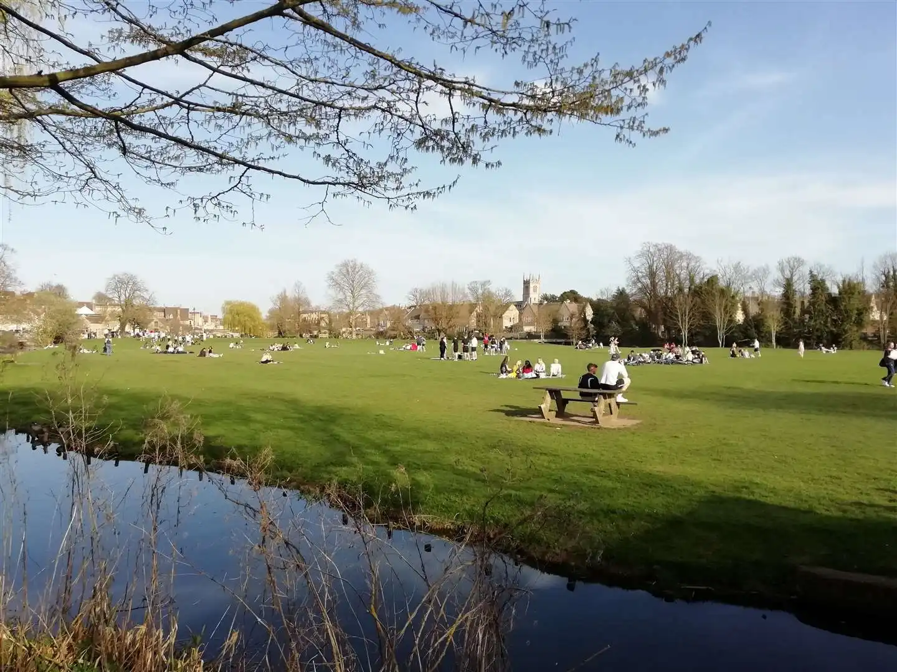

Burghley House
Burghley House is a privately owned property by Burghley that is open to the public,
allowing you to venture around their lands. Burghley consists of deers and stags in
the summer, and sheep in the winter, letting you watch and see the beauty of nature
in its natural form.
Burghley is a great location for the family to go on an outing, with the grounds being large enough to enjoy a lengthy bike ride or stroll. The grounds are also ideal for a family picnic when the weather is just right, so make sure to utilise our in-built weather application to ensure you go when it's sunny.
Burghley is a great location for the family to go on an outing, with the grounds being large enough to enjoy a lengthy bike ride or stroll. The grounds are also ideal for a family picnic when the weather is just right, so make sure to utilise our in-built weather application to ensure you go when it's sunny.
Stamford Meadows
Stamford Meadows is located near the central town, just below red lion
square.
With frequent visits in the summer from the
ice cream van, the meadow is a great place to take the family on a day out,
where you can sit and relax, play football, or watch the ducks. The meadows are in a central location, allowing you
to quickly get a bag of fish and chips from a nearby chip shop and go and relax.

Stamford Art Centre
Stamford Art Centre provides the people of Stamford with a wide variety of
different plays, movies and music, so don't be shy, and make sure you take a
trip inside while you're in Stamford. You will be able to choose from a
vast selection of different entertainment, but you can also join clubs, which will
help keep children entertained while you stay in our town.
The Stamford Art Centre also has a wide variety of movies, with large comfortable seats to sit and eat your popcorn while enjoying the film.
The Stamford Art Centre also has a wide variety of movies, with large comfortable seats to sit and eat your popcorn while enjoying the film.